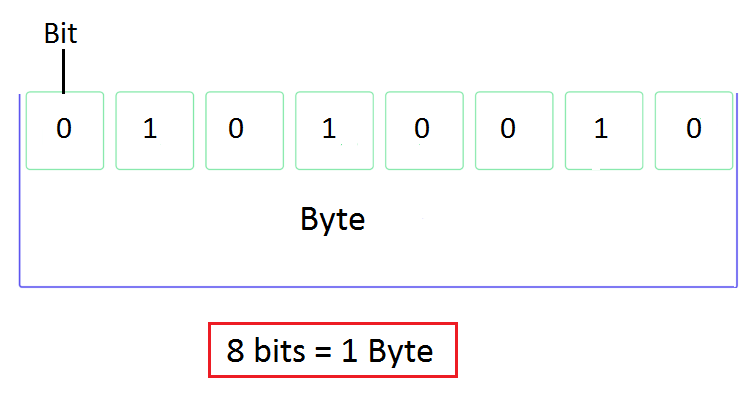

Módulo 2: Tipos de Datos y Variables
¿Qué es un Dato en Programación? 💡
En el corazón de la programación, un Dato es la unidad fundamental de información que un programa manipula, almacena o procesa. Tu programa C es, esencialmente, una máquina diseñada para transformar datos de una forma a otra.
Definición: Un dato es cualquier valor o información registrada que puede ser representada digitalmente (mediante 0s y 1s) y que tiene un significado para el programa.
Significado: En C, es crucial que el dato tenga un significado claro. El número 10 no es solo un valor; puede representar la edad de una persona, la temperatura de una habitación, o la cantidad de veces que se repite un proceso.
Clasificación Fundamental de Datos
En el mundo digital, los datos se clasifican según su naturaleza, lo que determina cómo se almacenan y qué operaciones se pueden realizar con ellos:
| Tipo de Dato | Propósito | Ejemplos en C |
|---|---|---|
| Numéricos | Representan cantidades. Permiten operaciones matemáticas (suma, resta, etc.). | Enteros (5, -100), Decimales (3.14, 0.5). |
| Textuales/Caracteres | Representan letras, símbolos o cualquier carácter tipográfico. Se usan para formar palabras o frases. | Letras ('A', 'z'), Símbolos ('#', '@'). |
| Lógicos (Booleanos) | Representan la verdad o la falsedad. Permiten tomar decisiones en el código. | Verdadero (1) o Falso (0). |
En el Lenguaje C, el Tipo de Dato (que veremos a continuación) es lo que define el significado y, crucialmente, la cantidad de memoria que la computadora reservará para almacenar esa pieza de información.
El Byte y el Bit: Las Unidades de Memoria 🧱
Toda la información que manipula una computadora —números, letras, imágenes o instrucciones— se reduce a combinaciones de dos unidades fundamentales: el Bit y el Byte.

El Bit (Binary Digit)
Definición: El Bit es la unidad mínima de información en un sistema digital. Solo puede tener uno de dos estados posibles: 0 (apagado, falso) o 1 (encendido, verdadero).
Rol: Un único bit no puede almacenar mucha información, pero es la base lógica de toda la computación.
El Byte (Agrupación)
Dado que un bit es tan limitado, las computadoras agrupan los bits en conjuntos para almacenar información más útil.
Definición: Un Byte es un conjunto de 8 bits. Es la unidad más pequeña de memoria que la CPU puede direccionar (la que recibe un "código postal" único en la RAM).
Capacidad: Un byte puede representar $2^8 = 256$ valores diferentes (desde 0 hasta 255), lo que es suficiente para almacenar un solo carácter (como la letra 'A' o el número '5').
Variables y el Espacio en Bytes
Cuando programas en C, cada tipo de dato que eliges (ej. un número entero o un carácter) requiere un número específico de bytes para ser almacenado de forma segura y completa.
Si tienes una variable de 4 bytes, significa que la computadora está reservando 4 * 8 = 32 bits de espacio contiguo en la memoria RAM para ese dato.
En el siguiente tema, veremos cómo el tipo de dato que eliges le indica a C exactamente cuántos bytes reservar para cada variable que declaras.
Concepto de Memoria RAM
La Memoria RAM (Random Access Memory, Memoria de Acceso Aleatorio) es el lugar físico donde tu programa C guarda y recupera todos sus datos mientras se está ejecutando. Cuando declaras una variable, estás pidiéndole al sistema operativo que te reserve un espacio aquí.
RAM como un Gran Armario de Cajones
Podemos imaginar la memoria RAM como un gran armario de archivado con millones de pequeños cajones.
Cada Cajón es un Byte: Cada cajón, el espacio de memoria más pequeño que se puede direccionar, se llama Byte.
Cada Cajón tiene una Dirección: Cada uno de estos bytes tiene una dirección única (un número de ubicación) que funciona como su "núdigo postal". Cuando el programa necesita guardar o leer un dato, usa esta dirección para ir directamente a la celda exacta.
Acceso Rápido: El término "acceso aleatorio" significa que la CPU (Unidad Central de Procesamiento) puede saltar inmediatamente a cualquier dirección de memoria para leer o escribir un dato, sin tener que revisar los datos anteriores en orden.
¿Cómo se Relaciona con las Variables?
En C, cuando declaramos una variable (como int edad;), estamos haciendo tres cosas relacionadas con la memoria RAM:
Reserva de Espacio: Le pedimos al compilador que reserve una cantidad específica de bytes contiguos (varios cajones juntos) para ese tipo de dato.
Etiquetado: Le damos un nombre (edad) a ese espacio de memoria para que no tengamos que recordar su dirección numérica.
Almacenamiento: Ahí es donde se guardará el valor de la variable (25).
Por lo tanto, la gestión de memoria es fundamental: el tipo de dato que elijas le dice a C cuántos de estos "cajones" contiguos debe usar para almacenar tu información.
Asignación de Espacio y Dirección 📍
Cuando declaras una variable en C, no solo estás dándole un nombre a un dato; estás iniciando un proceso fundamental de gestión de memoria: la asignación de espacio.
El Proceso de Reserva de Memoria
Reserva de Bytes Contiguos: El Tipo de Dato que eliges (ej. int o char) le indica al compilador cuántos bytes necesita tu variable. El compilador, en la fase de Enlazado o durante la ejecución, le pide al sistema operativo que reserve un bloque de esos bytes. Este bloque siempre es contiguo (los cajones de memoria están uno al lado del otro).
- Ejemplo: Si declaras un entero (int), el compilador reserva 4 bytes juntos en la RAM.
La Dirección de Memoria: Dado que cada byte en la RAM tiene una dirección única, la variable, al ocupar un bloque, se identifica por la dirección del primer byte de ese bloque.
- Esta dirección es un número largo (a menudo representado en hexadecimal) que actúa como la ubicación física y única de tu variable en la RAM.
El Nombre de la Variable vs. la Dirección
| Concepto | Lo que es | Ejemplo |
|---|---|---|
| Nombre de la Variable | Una etiqueta simple y legible (para el programador). | edad |
| Valor | El contenido que se almacena en el espacio reservado. | 25 |
| Dirección de Memoria | La ubicación real del primer byte del dato (para la CPU). | 0x7ffee21a1f58 |
En C, utilizas el nombre (edad) para trabajar con el valor (25), mientras que el compilador utiliza la dirección de memoria para saber exactamente dónde ir en la RAM para leer o modificar ese valor.
Aunque los punteros (que exploraremos más adelante) son la herramienta principal para trabajar con direcciones, es crucial entender ahora que cada variable en tu programa vive en una ubicación específica y única en la memoria RAM.